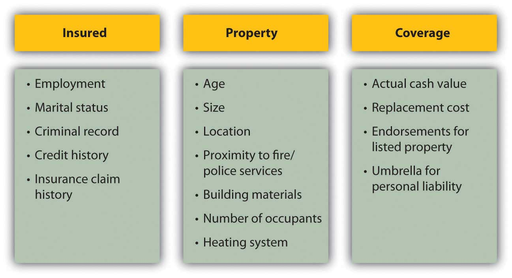
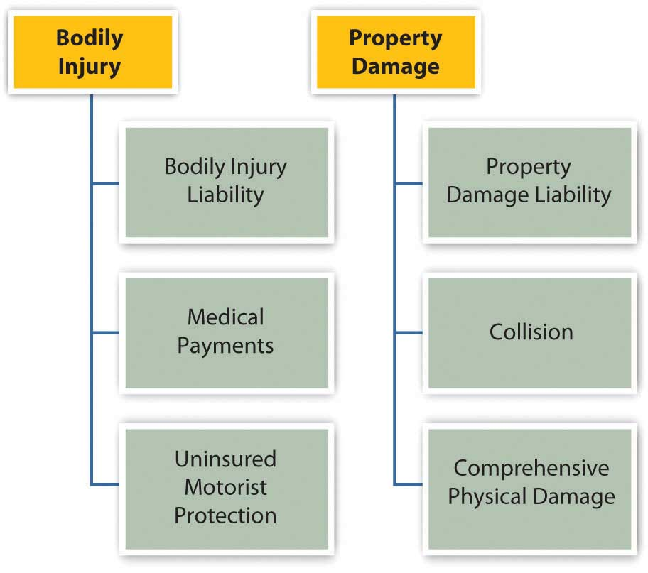
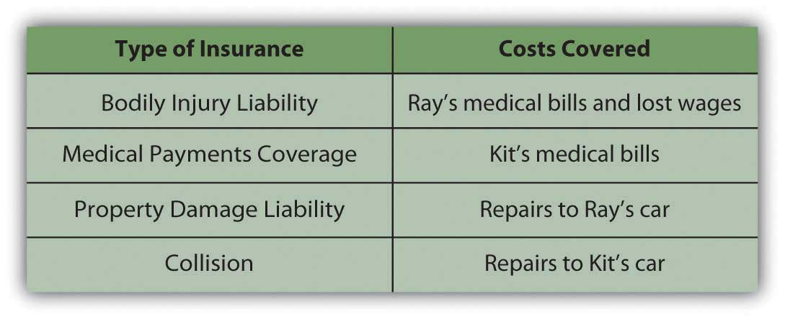
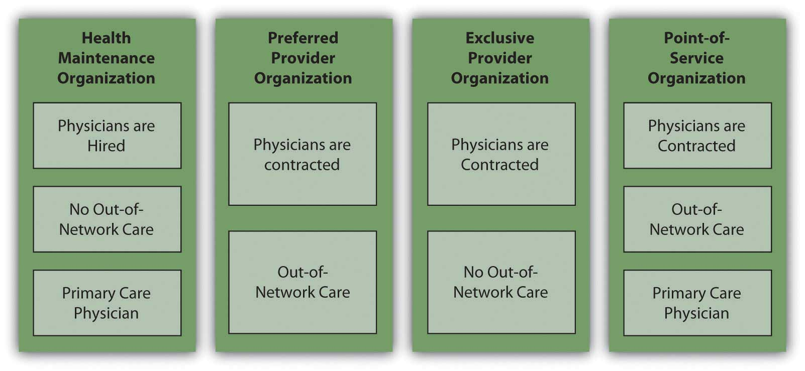
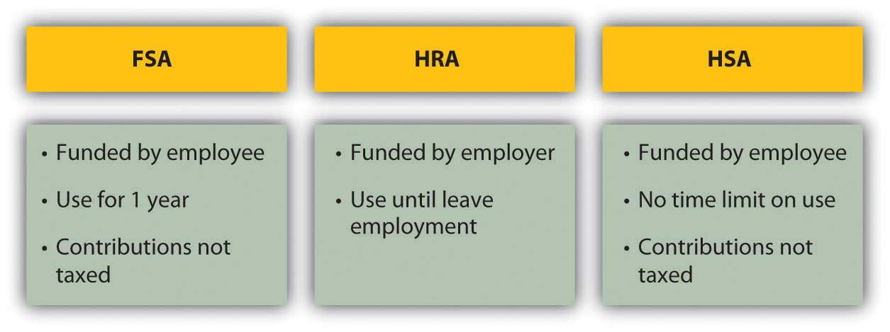
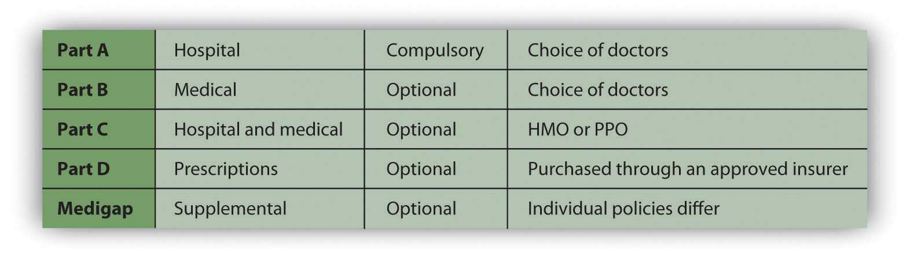
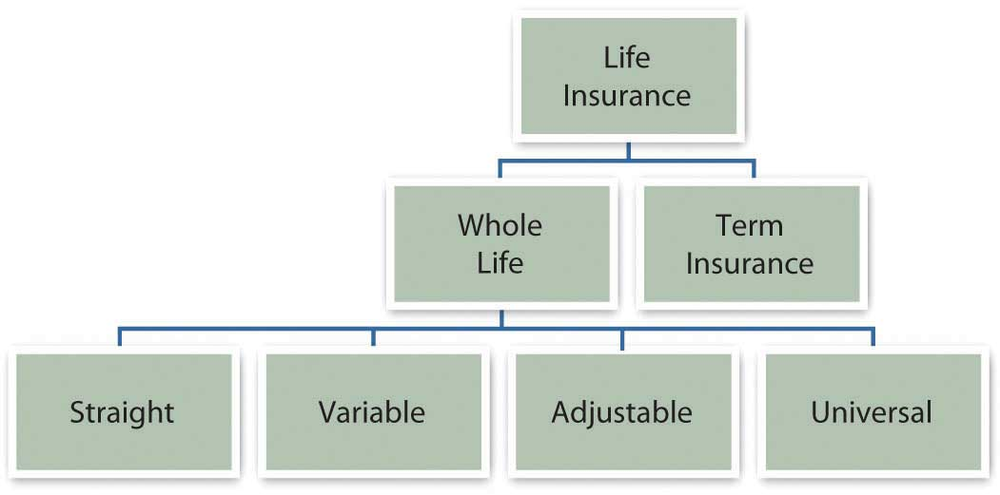

Life is full of risks. You can try to avoid them or reduce their likelihood and consequences, but you cannot eliminate them. You can, however, pay someone to share them. That is the idea behind insurance.
There are speculative risksIntended risk that offers a chance of loss or gain., that is, risks that offer a chance of loss or gain, such as developing a “killer app” that may or may not sell or investing in a corporate stock that may or may not provide good returns. Such risks can be avoided simply by not participating. They are almost always uninsurable.
There are pure risksThe risk of accidental or unintentional events of accidental or unintentional events, such as a car accident or an illness. Pure risks are insurable because their probabilities can be calculated precisely enough for the risk to be quantified, which means it can be priced, bought, and sold.
Risk shiftingSelling risk to avoid bearing the full consequence of unintentional events. is the process of selling risk to someone who then assumes the risk and its consequences. Why would someone buy your risk? Because in a large enough market, your risk can be diversified, which minimizes its cost.
Insurance can be purchased for your property and your home, your health, your employment, and your life. In each case, you weigh the cost of the consequence of a risk that may never actually happen against the cost of insuring against it. Deciding what and how to insure is really a process of deciding what the costs of loss would be and how willing you are to pay to get rid of those risks.
The costs of insurance can also be lowered through risk avoidance or reduction strategies. For example, installing an alarm system in your home may reduce homeowners’ insurance premiums because that reduces the risk of theft. Of course, installing an alarm system has a cost too. Risk management is the strategic trade-off of the costs of reducing, assuming, and shifting risks.
Property insurance is ownership insurance: it insures that the rights of ownership conferred upon you when you purchased your property will remain intact. Typically, property insurance covers loss of use from either damage or theft; loss of value, or the cost of replacement; and liability for any use of the property that causes damage to others or others’ property. For most people, insurable property risks are covered by insuring two kinds of property: car and home.
Loss of use and value can occur from hazards such as fire or weather disasters and from deliberate destruction such as vandalism or theft. When replacement or repair is needed to restore usefulness and value, that cost is the cost of your risk. For example, if your laptop’s hard drive crashes, you not only have the cost of replacing or repairing it, but also the cost of being without your laptop for however long that takes. Insuring your laptop shares that risk (and those costs) with the insurer.
Liability is the risk that your use of your property will injure someone or something else. Ownership implies control of, and therefore responsibility for, property use.
For example, you are liable for your dog’s attack on a pedestrian and for your fallen tree’s damage to a neighbor’s fence. You also are liable for damage a friend causes while driving your car with your permission and for injury to your invited guests who trip over your lawn ornament, fall off your deck, or leave your party drunk.
Legal responsibility can be from
Homeowner’s insurance insures both the structure and the personal possessions that make the house your home. Renter’s insurance protects your possessions even if you are not the owner of your dwelling. You may not think you need insurance until you are the homeowner, but even when you don’t need to insure against possible damage or liability for your dwelling, you can still insure your possessions. Even if your furniture came from your aunt’s house or a yard sale, it could cost a lot to replace.
If you have especially valuable possessions such as jewelry or fine musical instruments, you may want to insure them separately to get enough coverage for them. Such items are typically referred to as listed propertyValuable property insured separately under a homeowner’s policy. and are insured as endorsementsThe clause of a homeowner’s policy insuring listed property. added on to a homeowners’ or renter’s policy. Items should be appraised by a certified appraiser to determine their replacement or insured value.
A good precaution is to have an up-to-date inventory of your possessions such as furniture, clothing, electronics, and appliances, along with photographs or video showing these items in your home. That inventory should be kept somewhere else, such as a safe deposit box. If the house suffered damage, you would then have the inventory to help you document your losses.
A homeowners’ policy covers damage to the structure itself as well as any outbuildings on the property and, in some cases, even the landscaping or infrastructure on the grounds, such as a driveway.
A homeowners’ policy does not cover
According to information from the Insurances Services Office (http://www.iso.com), an insurance industry data and research company, hazards covered by the homeowner’s policy include
Note that floods and earthquakes are not covered. A homeowner in a flood- or earthquake-prone area may buy special coverage, either from a private insurer or from a federal or state program.
Homeowners’ insurance covers the less direct costs of hazards as well. For example, the costs of removing damaged goods or temporary repairs are covered. The cost of temporary housing and extra living expenses while repairs are made is covered, although usually for a limited time or amount.
Homeowners’ policies cover liability for injuries on the property and for injuries that the homeowner may accidentally inflict. You may also want to add an umbrella policyPersonal liability insurance in attached to a homeowner’s policy. that covers personal liabilities such as slander, libel, and defamation of character. An umbrella policy may also extend over other assets, such as vehicles or rentals covered by other insurance carriers. If you participate in activities where you are assuming responsibilities for others—you are taking the Cub Scout pack out for a hike, for example, or volunteering at your local recycling center—you may want such extended liability coverage available through your homeowners’ policy (also available separately).
Home insurance policies automatically cover your possessions for up to 40 percent of the house’s insured value. You can buy more coverage if you think they are worth more. The benefits are specified as either actual cash valueMarket value of insured property at time of loss. or replacement costCost of replacing insured property at time of loss.. Actual cash value tries to estimate the actual market value of the item at the time of loss, so it accounts for the original cost less any depreciation that has occurred. Replacement cost is the cost of replacing the item. For most items, the actual cash value is less.
For example, say your policy insures items at actual cash value. You are claiming the loss of a ten-year-old washer and dryer that were ruined when a pipe burst and your basement flooded. Your coverage could mean a benefit of $100 (based on the market price of ten-year-old appliances). However, to replace your appliances with comparable new ones could cost $1,000 or more.
The actual cash value is almost always less than the replacement value, because prices generally rise over time and because items generally depreciate (rather than appreciate) in value. A policy that specifies benefits as replacement costs offers more actual coverage. Guaranteed replacement costsThe full cost of replacing insured items at time of loss. are the full cost of replacing your items, while extended replacement costsInsured amount capped at a specified percentage of actual cash value. are capped at some percentage—for example, 125 percent of actual cash value.
You buy home insurance by paying a premium to the insurance company. The insurance purchase is arranged through a broker, who may represent more than one insurance company. The broker should be knowledgeable about various policies, coverage, and premiums offered by different insurers.
The amount of the premium is determined by the insurer’s risk—the more risk, the higher the premium. Risk is determined by
To gauge the risk of the insured, the insurer needs information about your personal circumstances and history, the nature of the property, and the amount of coverage desired for protection. This information is summarized in Figure 10.4 "Factors that Determine Insurance Premiums".
Figure 10.4 Factors that Determine Insurance Premiums
Insurers may offer discounts for enhancements that lower risks, such as alarm systems or upgraded electrical systems. (Smoke detectors are required by law in every state.) You also may be offered a discount for being a loyal customer, for example, by insuring both your car and home with the same company. Be sure to ask your insurance broker about available discounts for the following:
The average premium for homeowners insurance in 2006 in the United States was $804 a year, and for renters insurance was $189 a year. That year, Arizona homeowners paid an average of $640 for insurance that cost $1,409 in Texas.Insurance Information Institute, http://www.iii.org/media/facts/statsbyissue/homeowners (accessed May 3, 2009). Premiums can vary, even for the same levels of coverage for the same insured. You should compare policies offered by different insurers to shop around for the best premium for the coverage you want.
If you own and drive a car, you must have car insurance. Your car accident may affect not only you and your car, but also the health and property of others. A car accident often involves a second party, and so legal and financial responsibility must be assigned and covered by both parties. In the United States, financial responsibility laws in each state mandate minimal car insurance, although what’s “minimal” varies by state.
Conventionally, a victim or plaintiff in an accident is reimbursed by the driver at fault or by his or her insurer. Fault has to be established, and the amount of the claim agreed to. In practice, this has often been done only through extensive litigation.
Some states in the United States and provinces in Canada have adopted some form of no-fault insuranceA system of auto insurance where the insured’s insurance covers physical and property damage and liability, regardless of “fault” determined., in which, regardless of fault, an injured’s own insurance covers his or her damages and injuries, and a victim’s ability to sue the driver at fault is limited. The idea is to lower the incidence of court cases and speed up compensation for victims. The states with compulsory no-fault auto insurance, in which personal injury protection (PIP) is required, include Florida, Hawaii, Kansas, Kentucky, Massachusetts, Michigan, Minnesota, New Jersey, New York, North Dakota, Pennsylvania, Utah, and Puerto Rico. Eleven other states use no-fault as add-on or optional insurance.Insurance Information Institute, http://www.iii.org/media/hottopics/insurance/nofault (accessed May 3, 2009). The remaining states in the United States use the conventional tort system (suing for damages in court). Understanding the laws of the state where you drive will help you to make better insurance decisions.
Auto insurance policies cover two types of consequences: bodily injury and property damage. Each covers three types of financial losses. Figure 10.5 "Automobile Insurance Coverage" shows these different kinds of coverage.
Figure 10.5 Automobile Insurance Coverage
Bodily injury liabilityResponsibility for financial losses from injuries sustained in an accident for people outside of the car of the driver at fault. refers to the financial losses of people in the other car that are injured in an accident you cause, including their medical expenses, loss of income, and your legal fees. Injuries to people in your car or to yourself are covered by medical payments coverageResponsibility for financial losses from injuries sustained in an accident for people inside of the car of the driver at fault.. Uninsured motorist protectionCoverage of financial losses from injuries sustained in an accident if the driver at fault has insufficient insurance. covers your injuries if the accident is caused by someone with insufficient insurance or by an unidentified driver.
Property damage liabilityResponsibility for damage to property owned by people other than the driver at fault. covers the costs to other people’s property from damage that you cause, while collisionResponsibility for damage to the property of the driver at fault. covers the costs of damage to your own property. Collision coverage is limited to the market value of the car at the time, usually defined by the National Automobile Dealers Association’s (NADA) Official Used Car Guide or “blue book” (http://www.nada.org). To reduce their risk, the lenders financing your car loan will require that you carry adequate collision coverage. Comprehensive physical damageCoverage for damage from hazards. covers your losses from anything other than a collision, such as theft, weather damage, acts of nature, or hitting an animal.
Auto insurance coverage is limited, depending on the policy. The limits are typically stated in numbers representing thousands of dollars. For example, 100/300/50 means that $100,000 is the limit on the payment to one person in an accident; $300,000 is the limit on the amount paid in total (for all people) per accident; and $50,000 is the limit on the amount of property damage liability that can be paid out.
Here’s an example of how it all works. Kit is driving home one night from a late shift at the convenience store where he works. Sleepy, he drifts into the other lane of the two-lane road and hits an oncoming car driven by Ray. Both Kit and Ray are injured, and both cars are damaged. Figure 10.6 "Auto Insurance Coverage Example" shows how Kit’s insurance will cover the costs.
Figure 10.6 Auto Insurance Coverage Example
As with any insurance, the cost of having an insurer assume risk is related to the cost of that risk. The cost of auto insurance is related to three factors that create risk: the car, the driver, and the driving environment—the region or rating territory.
The model, style, and age of the car determine how costly it may be to repair or replace, and therefore the potential cost of damage or collision. The higher that cost is, the higher the cost of insuring the car. For example, a 2009 luxury car will cost more to insure than a 2002 sedan. Also, different models have different safety features that may lower the potential cost of injury to passengers, and those features may lower the cost of insurance. Different models may come with different security devices or be more or less attractive to thieves, affecting the risk of theft.
The driver is an obvious source of risk as the operator of the car. Insurers use various demographic factors such as age, education level, marital status, gender, and driving habits to determine which kinds of drivers present more risk. Not surprisingly, young drivers (ages sixteen to twenty-four) of both sexes and elderly drivers (over seventy) are the riskiest. Twice as many males as females die in auto accidents, but more females suffer injuries. Nationally, in any year your chances of being injured in a car accident are about one in a thousand.U.S. Census Bureau, The Disaster Center, http://www.disastercenter.com/traffic (accessed May 3, 2009).
Your driving history and especially your accident claim history can affect your premiums, as well as your criminal record and credit score. In some states, an accident claim can double your cost of insurance over a number of years. Your driving habits—whether or not you use the car to commute to work, for example—can affect your costs as well. Some states offer credits or points that reduce your premium if you have a safe driving record, are a member of the American Automobile Association (AAA), or have passed a driver education course.
Where you live and drive also matters. Insurers use police statistics to determine rates of traffic accidents, auto theft, and vandalism, for example. If you are in an accident-prone area or higher crime region, you may be able to offset those costs by installing safety and security features to your car.
Premium rates vary, so you should always shop around. You can shop through a broker or directly. Online discount auto insurers have become increasingly popular in recent years. Their rates may be lower, but the same cautions apply as for other high-stakes transactions conducted online.
Also, premiums are not the only cost of auto insurance. You should also consider the insurer’s reliability in addressing a claim. Chances are you rely on your car to get to school, to work, or for your daily errands or recreational activities. Your car is also a substantial investment, and you may still be paying off debt from financing your car. Losing your car to repairs and perhaps being injured yourself is no small inconvenience and can seriously disrupt your life. You want to be working with an insurer who will cooperate in trying to get you and your car back on the road as soon as possible. You can check your insurer’s reputation by the record of complaints against it, filed with your state’s agency of banking and insurance, or with your state’s attorney general’s office.
Auto insurance coverage insures bodily injury through
Auto insurance coverage insures property damage through
Melissa is a medical transcriptionist who runs a cleaning service on the side. She usually clears about $24,000 per year from the cleaning service and has come to rely on that money. One day, Melissa slips on a wet floor. She is taken by ambulance to the local hospital, where she is treated for a badly broken wrist and released the next day. Melissa can’t clean for about eight weeks, losing close to $6,000 in earnings.
Soon, medical bills start to arrive. Melissa is not concerned, because she has health insurance through her job as a medical transcriptionist. She is surprised to find out, however, that some of the costs of this accident are not covered, that she has a significant deductible, and that she’ll also have to pay the difference between what the doctors billed and what the insurance will pay. Not only did she lose substantial cleaning earnings, but her out-of-pocket costs are mounting as well. This accident is beginning to be very costly.
Melissa is discovering that health insurance is a complicated business. The time to understand your health coverage is before you need it. When you are recovering from an accident or illness, you should not be concerned with your medical bills, yet you may have to be.
According to the National Coalition on Health Care (http://www.nchc.org), “Since 1999, employment-based health insurance premiums have increased 120 percent, compared to cumulative inflation of 44 percent and cumulative wage growth of 29 percent during the same period.”The Henry J. Kaiser Family Foundation, “Employee Health Benefits: 2008 Annual Survey,” September 2008. Even where employers “provide” health insurance as an employee benefit, in other words, workers are paying an increasing share of the premium. In 2008, that share averaged 27 percent.National Coalition on Health Care, “Health Insurance Costs,” 2009, http://www.nchc.org (accessed May 3, 2009). A 2005 “study found that 50 percent of all bankruptcy filings were partly the result of medical expenses. Every 30 seconds in the United States someone files for bankruptcy in the aftermath of a serious health problem.”David U. Himmelstein, Deborah Thorne, Elizabeth Warren, and Steffie Woolhandler, “Medical Bankruptcy in the United States, 2007: Results of a National Study,” American Journal of Medicine 122, no. 8 (August 2009): 741–46.
Even if you think those numbers are exaggerated, it’s still sobering, because no matter how much you try to take care of yourself and to be careful, no one can evade the pure risk of injury or illness. All you can do is try to shift that risk in a way that makes sense for your financial health.
Because of the increasing costs of health care and the increasing complexities of paying for them, the distribution and financing of health care is much discussed and debated in the United States, especially the roles of the federal government and insurance providers. Regardless of the outcome of this debate, momentum is building for change. You should be aware of changes as they occur so that you can incorporate those changes into your budget and financial plans.
There are many different kinds of coverage and plans for health insurance. You may have group health insurance offered as an employee benefit or as a member of a professional association. Group plans have lower costs, because the group has some bargaining power with the insurer and can generally secure lower rates for its members. But group plans are not necessarily comprehensive, so you may want to supplement the group coverage with an individual health insurance policy, available to individuals and families.
Sufficient coverage should include basic insuranceHealth insurance that covers the costs of physician expenses, surgical expenses, and hospital expenses. and major medical insurance. A basic insurance policy will cover physician expense, surgical expense, and hospital expense.
Frequently, these coverages are capped or limited. For example, hospital expense coverage is typically limited to a certain amount per day or a certain number of days per incident. Surgeon’s fees are often capped.
The three basic coverages are usually combined under one policy. In addition, health insurance is completed by major medical insuranceInsurance for the costs of serious injury or illness., which covers the costs of a serious injury or illness. Depending on the extent and the nature of your illness or injury, medical bills can quickly exceed your basic coverage limits, so major medical can act as an extension to those limits, saving you from potential financial distress.
Dental insurance also supplements your basic insurance, usually providing reimbursement for preventative treatments and some partial payment of dental services such as fillings, root canals, crowns, extractions, bridgework, and dentures. Vision insurance provides for eye care, including exams and treatment for eye diseases, as well as for corrective lenses. Depending on your basic coverage limits, dental and vision care could be important for you.
Another feature of basic coverage is a prescription drug plan. Prescriptions may be covered entirely or with a co-pay, or only if the generic version of the drug is available. Your insurer should provide a formularyA list of drugs covered by an insurer under a prescription drug plan. or a list of drugs that are covered. Depending on your plan, prescription coverage may be available only as a supplement to your basic coverage.
As health care costs and insurance premiums rise, insurers add cost offsets to make their policies more affordable. Those offsets may include the following:
Each of these payment features represents responsibilities of the insured, that is, your out-of-pocket costs. The more costs you shoulder, the less risk to the insurer, and so the less you pay for the insurance policy. Making you responsible for initial costs also discourages you from seeking health care more than is necessary or from submitting frivolous health care claims.
Costs vary with coverage, coverage limits, and offsets, and they vary widely between insurers. You should be well informed as to the specifics of your coverage, and you should compare rates before you buy. An insurance broker can help you to do this, and there are Web sites designed to help you explore the available options. See, for example, the health insurance consumer guide and resource links from the U.S. Department of Health and Human Services at http://www.ahrq.gov/consumer/insuranceqa/.
Health insurance is sold through private insurers, nonprofit service plans, and managed care organizations. Private insurers sell most of their plans to employers as group plans. Individuals are far more likely to purchase insurance through a service plan or managed care.
Private (for-profit) plans in most states are underwritten based on your age, weight, smoking status, and health history and are generally more expensive than other types of plans. You may have to take a medical exam, and specific preexisting conditions—such as asthma, heart disease, anxiety, or diabetes—could be excluded from coverage or used as grounds for increasing the cost of your premium, based on your higher risk. Nevertheless, federal and state laws protect you from being denied health care coverage because of any preexisting condition.
A service plan such as Blue Cross/Blue Shield, for example, consists of regional and state-based nonprofit agencies that sell both group and individual policies. More than half of the health insurance companies in the United States are nonprofits, including, for example, Health Care Service Corporation and Harvard Pilgrim Health Care as among the largest (http://www.nonprofithealthcare.org/resources/BasicFactsAndFigures-NonprofitHealthPlans9.9.08.pdf).
Managed care organizationsOrganizations or networks of health care providers based on the principle of providing preventative care in order to better health and lower costs of health care. Such organizations also provide for emergency and special treatment services under various systems. became popular in the last thirty years or so with the idea that providing preventative care would lower health care costs. Managed care takes the following forms:
The two most familiar kinds of managed care are health maintenance organizations (HMOs) and preferred provider organizations (PPOs). A health maintenance organizationAn organization to provide “managed care” through reliance on primary care physicians and a network of specialists, with an emphasis on preventative care. directly hires physicians to provide preventative, basic, and supplemental care. Preventative care should include routine exams and screening tests and immunizations. Basic care should include inpatient and outpatient treatments, emergency care, maternity care, and mental health and substance abuse services. As with any plan, the details for what defines “basic care” will vary, and you should check the fine print to make sure that services are provided. For example, the plan may cover inpatient hospitalizations for a limited number of days in case of a physical illness, but inpatient hospitalization for a more limited number of days for a mental illness.
Supplemental care typically includes the cost of vision and hearing care, prescriptions, prosthetics devices, or home health care. Some or all of this coverage may be limited, or may be available for an added premium. The premium paid to the HMO is a fixed, monthly fee, and you must seek care only within the HMO’s network of care providers.
The most serious constraint of HMOs is the limited choice of doctors and the need to get a referral from your primary care physician (PCP) to obtain the services of any specialist. Depending on where you live and the availability of medical practitioners, this may or may not be an issue for you, but before joining an HMO, you should consider the accessibility and convenience of the care that you are allowed, as well as the limitations of the coverage. For example, if you are diagnosed with a serious disease or need a specific surgical technique, is there an appropriate specialist in the network that you can consult? Suppose you want a second opinion? The rules differ among HMOs, but these are the kinds of questions that you should be asking. You should also be familiar with the HMO’s appeal procedures for coverage denied.
The preferred provider organization (PPO)A type of managed care in which physicians, hospitals, and other care providers contract with an insurer to provide care at reduced rates upon referral from the insured’s primary care physician. Unlike the HMO, out-of-network providers may be used. has a different arrangement with affiliated physicians: it negotiates discounted rates directly with health care providers in exchange for making them the “preferred providers” for members seeking care. Care by physicians outside the network may be covered, but with more limitations, or higher co-pays and deductibles. In exchange for offering the flexibility of more choices of provider, the PPO charges a higher premium. Services covered are similar to those covered by an HMO.
The exclusive provider organization works much like the PPO, except that out-of-network services are not covered at all and become out-of-pocket expenses for the insured.
The point-of-service (POS)A type of managed care in which physicians, hospitals, and other care providers contract with an insurer to provide care at reduced rates upon referral from the insured’s primary care physician. Unlike the HMO, out-of-network providers may be used, but on a limited basis. plan also uses a network of contracted, preferred providers. As in an HMO, you choose a primary care physician who then controls referrals to specialists or care beyond preventative and basic care. As in the PPO, out-of-network services may be used, but their coverage is more limited, and you pay higher out-of-pocket expenses for co-pays and deductibles.
Figure 10.9 "Managed Care Choices" shows the differences in managed care options.
Figure 10.9 Managed Care Choices
In the United States, if someone is not self-insured or uninsured, health insurance coverage is paid for, at least in part, by the employer. As health care costs have risen, employers in all industries have increasingly complained that this cost makes them less competitive in global markets. As an incentive to have more people paying the costs of health care themselves and to be less dependent on employers, the federal government has created tax deductions for savings earmarked for use in paying for health costs. These savings plans are known as flexible spending accounts (FSAs), health reimbursement accounts (HRAs), and health savings accounts (HSAs).
A flexible savings accountAn account created with regular payroll deductions by an employee to finance supplemental health care costs. Monies must be expended within a specified time period or forfeited (“use it or lose it”). is used to supplement your basic coverage. It is offered by employers and funded by employees: you may have a tax-exempt deduction made from your paycheck to your flexible spending account. The money from your FSA may be used for care expenses not normally covered by your plan—for example, orthodonture, elder care, or child care. At the end of the year, any money remaining in your account is forfeited; that is, it does not roll over into the next year. Unless you can foresee expenses within the coming year, flexible spending may not be worth the tax break.
A health reimbursement accountAn employer owned and funded account to finance empoyee health care costs, with the employee choosing the type of coverage. is an account funded by employers. The amount is used to pay the premiums for basic coverage with a high deductible, and any money left over may be used for other health expenses, or, if unused, may be carried over to the next year. The account is yours until you leave your job, when it reverts back to your employer.
A health savings accountIndividually owned and financed savings accounts that may be used to finance health care costs with tax-deductible contributions. (HSA) allows a tax-deductible contribution from your paycheck to pay the premiums for catastrophic coverage with a high deductible and whatever out-of-pocket health care costs you may have. It is employee funded, employee managed, and employee owned. Thus, it is yours, and you may take it with you when you change jobs.
Figure 10.10 "Differences in Private Funding of Health Care" shows the differences between these accounts.
Figure 10.10 Differences in Private Funding of Health Care
A health savings account shifts the responsibility for health insurance from the employer to the employee, although it still gives the employee access to lower group rates on premiums. If you are relatively young and healthy, and your health care need is usually just an annual physical, this seems like an advantageous plan. However, remember that the idea of insurance is to shift risk away from you, to pay someone to assume the risk for you. With a high-deductible policy, you are still bearing a lot of risk. If that risk has the potential to cause a financial disaster, it’s too much.
If you have employer-sponsored health insurance and you leave your job, you may be entitled to keep your insurance for eighteen months (or more under certain circumstances). Under the 1985 Consolidated Budget Omnibus Reconciliation Act (COBRA), an employee at a company with at least twenty employees who notifies the employer of his or her intention to maintain health care coverage is entitled to do so provided the employee pays the premiums. Some states extend this privilege to companies with less than twenty employees, so you should check with your state’s insurance commissioner. You may also be able to convert your group coverage into an individual policy, although with more costly premiums.
The Health Insurance Portability and Accountability Act (HIPAA) of 1996 addresses issues of transferring coverage, especially as happens with a change of jobs. It credits an insured for previous periods of insurance coverage that can be used to offset any waiting periods for coverage of preexisting conditions. In other words, it makes it easier for someone who is changing jobs to maintain continuous coverage of chronic conditions or illnesses.Centers for Medicare and Medicaid Services, U.S. Department of Health and Human Services, http://www.cms.hhs.gov/hipaaGenInfo/ (accessed November 24, 2009). (For more information, research the U.S. Department of Health and Human Services at http://www.hhs.gov; see, for example, http://www.hhs.gov/ocr/privacy/hipaa/administrative/statute/hipaastatutepdf.pdf.)
The federal government, in concert with state governments, provides two major programs to the general public for funding health care: Medicare and Medicaid. The federal government also provides services to veterans of the armed forces, and their spouses and dependents, provided they use veterans’ health care facilities and providers (see http://www.va.gov).
MedicareA federal program financing health care costs with eligibility based on age (for those over age sixty-five). was established in 1965 to provide minimal health care coverage for the elderly, anyone over the age of sixty-five. Medicare offers hospital (Part A), medical (Part B), combined medical and hospital (Part C), and prescription coverage (Part D), as outlined in Figure 10.11 "Medicare Plans and Coverage".
Figure 10.11 Medicare Plans and Coverage
Medicare is really a combination of privately and publicly funded health care; the optional services all require some premium paid by the insured. You may not need Medicare’s supplemental plans if you have access to supplemental insurance provided by your former employer or by membership in a union or professional organization.
Medicare does not cover all services. For example, it does not cover dental and vision care, private nursing care, unapproved nursing home care, care in a foreign country, and optional or discretionary (unnecessary) care.
Medicare also determines the limits on payments for services, but physicians may charge more than that for their services (within limits determined by Medicare). You would be responsible for paying the difference. For these reasons, it is advisable to have supplemental insurance.
Marley thought she didn’t need to know anything about Medicare, being young, single, and healthy, but then her sixty-six-year-old father developed a debilitating illness, requiring not only medical care but also assistance with many of his daily living activities. Suddenly, Marley was shouldering the responsibility of arranging her father’s care and devising a strategy for financing it. She quickly learned about the care and limits of coverage offered by various Medicare plans.
MedicaidA federal program financing health care costs with eligibility based on income. was also established in 1965 to provide health care based on income eligibility. It is administered by each state following broad federal guidelines and is jointly financed by the state and federal government. This means that states differ somewhat in the benefits or coverage they offer. If someone is covered by both Medicaid and Medicare, Medicaid pays for expenses not covered by Medicare, such as co-pays and deductibles. Together, Medicare and Medicaid pay about 60 percent of all nursing home costs.The Henry J. Kaiser Family Foundation, “The Kaiser Commission on Medicaid and the Uninsured,” January 2006, http://www.kff.org/medicaid/upload/7452.pdf (accessed April 11, 2009).
Long-term care insuranceInsurance to provide for permanent assistance with activities of daily living in the event of disabling injury or illness. is designed to insure your care should you be chronically unable to care for yourself. “Care” refers not to medical care, but to care of “activities of daily living” (ADLs) such as bathing, dressing, toileting, eating, and mobility, which may be impaired due to physical or mental illness or injury.
Long-term care coverage is offered as either indemnity coverage or “expense-incurred” policies. With an indemnity policy, you will be paid a specified benefit amount per day regardless of your costs incurred. With an “expense-incurred” policy, you will be reimbursed for your actual expenses incurred. Both types of policies can have limits, either for dollar amounts per day, week, or month or for number of days or years of coverage. Newer policies are designed as integrated policies, offering pooled benefits and specifying a total dollar limit of benefits that may be used over an unspecified period.
Need for long-term care is anticipated in older age, although anyone of any age may need it. When you buy the policy, you may be far away from needing the coverage. For that reason, many policies offer benefit limits indexed to inflation, to account for cost increases that happen before you receive benefits.
The cost of a long-term care policy varies with your age, coverage, policy features such as inflation indexing, and current health. As with any insurance purchase, you should be as informed as possible, comparing coverage and costs before buying.
The insured’s responsibility for costs can be structured as
Health insurance is sold through private insurers, nonprofit service plans, and managed care organizations, which may be structured as
Private health care financing may be supplemented by
As you have learned, assets such as a home or car should be protected from the risk of a loss of value, because assets store wealth, so a loss of value is a loss of wealth.
Your health is also valuable, and the costs of repairing it in the case of accident or illness are significant enough that it also requires insurance coverage. In addition, however, you may have an accident or illness that leaves you permanently impaired or even dead. In either case, your ability to earn income will be restricted or gone. Thus, your income should be insured, especially if you have dependents who would bear the consequences of losing your income. Disability insurance and life insurance are ways of insuring your income against some limitations.
Disability insuranceInsurance to protect the insured against the risk of being unable to earn wages or salary as a result of injury or illness. is designed to insure your income should you survive an injury or illness impaired. The definition of “disability” is a variable feature of most policies. Some define it as being unable to pursue your regular work, while others define it more narrowly as being unable to pursue any work. Some plans pay partial benefits if you return to work part-time, and some do not. As always, you should understand the limits of your plan’s coverage.
The costs of disability insurance are determined by the features and/or conditions of the plan, including the following:
In general, the greater the number of these features or conditions that apply, the higher your premium.
All plans have a waiting period from the time of disability to the collection of benefits. Most are between 30 and 90 days, but some are as long as 180 days. The longer the waiting period is, generally, the less the premium.
Plans also vary in the amount and duration of benefits. Benefits are usually offered as a percent of your current wages or salary. The more the benefits or the longer the insurance pays out, the higher the premium. Some plans offer lifetime benefits, while others end benefits at age sixty-five (the age of Medicare eligibility).
In addition, some plans offer benefits in the following cases, all of which carry higher premiums:
You may already have some disability insurance through your employer, although in many cases the coverage is minimal. You may also be eligible for Social Security benefits from the federal government or workers’ compensation benefit from your state if the disability is due to an on-the-job accident. Other providers of disability benefits include the following:
You should know the coverage available to you and if you find it’s not adequate, supplement it with private disability insurance.
Life insuranceInsurance to compensate beneficiaries against the financial consequences of the death of the insured. is a way of insuring that your income will continue after your death. If you have a spouse, children, parents, or siblings who are dependent on your income or care, your death would create new financial burdens for them. To avoid that, you can insure your dependents against your loss, at least financially.
There are many kinds of life insurance policies. Before purchasing one, you should determine what it is you want the insurance to accomplish for your survivors. What do you want it to do?
These are uses of life insurance. Your goals for your life insurance will determine how much benefit you need and what kind of policy you need. Weighed against that are its costs—the amount of premium that you pay and how that fits into your current budget.
Sam and Maggie have two children, ages three and five. Maggie works as a credit analyst in a bank. Sam looks after the household and the children and Maggie’s elderly mother, who lives a couple of blocks away. He does her grocery shopping, cleans her apartment, does her laundry, and runs any errands that she may need done. Sam and Maggie live in a condo they bought, financed with a mortgage. They have established college savings accounts for each child, and they try to save regularly.
Sam and Maggie need to insure both their lives, because the loss of either would cause the survivors financial hardship. With Maggie’s death, her earnings would be gone, which is how they pay the mortgage and save for their children’s education. Insurance on her life should be enough to pay off the mortgage and fund their children’s college educations, while providing for the family’s living expenses, unless Sam returns to the workforce. With Sam’s death, Maggie would have to hire someone to keep house and care for their children, and also someone to keep her mother’s house and provide care for her. Insurance on Sam’s life should be enough to maintain everyone’s quality of living.
Maggie’s income provides for three expenditures: the mortgage, education savings, and living expenses. While living expenses are an ongoing or permanent need, the mortgage payment and the education savings are not: eventually, the mortgage will be paid off and the children educated. To cover permanent needs, Maggie and Sam should consider permanent insurance, also known as whole lifeLife insurance providing coverage until the insured’s death; it can also be used as an investment instrument., straight life, or cash value insurance. To insure those two temporary goals of paying the mortgage and college tuitions, Maggie and Sam could consider temporary or term insurance.
Term insuranceLife insurance providing coverage for a specified period of time. is insurance for a limited time period, usually one, five, ten, or twenty years. After that period, the coverage stops. It is used to cover financial needs for a limited time period—for example, to cover the balance due on a mortgage, or education costs. Premiums are lower for term insurance, because the coverage is limited. The premium is based on the amount of coverage and the length of the time period covered.
A term insurance policy may have a renewability option, so that you can renew the policy at the end of its term, or it may have a conversion option, so that you can convert it to a whole life policy and pay a higher premium. If it is multiyear level term or straight term, the premium will remain the same over the term of coverage.
Decreasing term insurance pays a decreasing benefit as the term progresses, which may make sense in covering the balance due on a mortgage, which also decreases with payments over time. On the other hand, you could simply buy a one-year term policy with a smaller benefit each year and have more flexibility should you decide to make a change.
A return-of-premium (ROP) term policy will return the premiums you have paid if you outlive the term of the policy. On the other hand, the premiums on such policies are higher, and you may do better by simply buying the regular term policy and saving the difference between the premiums.
Term insurance is a more affordable way to insure against a specific risk for a specific time. It is pure insurance, in that it provides risk shifting for a period of time, but unlike whole life, it does not also provide a way to save or invest.
Whole life insurance is permanent insurance. That is, you pay a specified premium until you die, at which time your specified benefit is paid to your beneficiary. The amount of the premium is determined by the amount of your benefit and your age and life expectancy when the policy is purchased.
Unlike term insurance, where your premiums simply pay for your coverage or risk shifting, a whole life insurance policy has a cash surrender valueThe value of a whole life policy—the cash available for the policyholder—if the policy is canceled before the death of the insured. or cash value that is the value you would receive if you canceled the policy before you die. You can “cash out” the policy and receive that cash value before you die. In that way, the whole life policy is also an investment vehicle; your premiums are a way of saving and investing, using the insurance company as your investment manager. Whole life premiums are more than term life premiums because you are paying not only to shift risk but also for investment management.
A variable lifeLife insurance that provides a guaranteed minimum benefit with potential to be greater depending on investment performance. insurance policy has a minimum death benefit guaranteed, but the actual death benefit can be higher depending on the investment returns that the policy has earned. In that case, you are shifting some risk, but also assuming some risk of the investment performance.
An adjustable lifeBenefits and premium can be adjusted without cancellation of the policy. policy is one where you can adjust the amount of your benefit, and your premium, as your needs change.
A universal lifeBenefits and premiums are flexible, in terms of both timing and amounts. policy offers flexible premiums and benefits. The benefit can be increased or decreased without canceling the policy and getting a new one (and thus losing the cash value, as in a basic whole life policy). Premiums are added to the policy’s cash value, as are investment returns, while the insurer deducts the cost of insurance (COI) and any other policy fees.
When purchased, universal life policies may be offered with a single premium payment, a fixed (and regular) premium payment until you die, or a flexible premium where you can determine the amount of each premium, so long as the cash value in the account can cover the insurer’s COI.
Figure 10.14 "Life Insurance Options" shows the life insurance options.
Figure 10.14 Life Insurance Options
So, is it term or whole life? When you purchase a term life policy, you purchase and pay for the insurance only. When you purchase a whole life policy, you purchase insurance plus investment management. You pay more for that additional service, so its value should be greater than its cost (in additional premiums). Whole life policies take some analysis to figure out the real investment returns and fees, and the insurer is valuable to you only if it is a better investment manager than you could have otherwise. There are many choices for investment management. Thus, the additional cost of a whole life policy must be weighed against your choices among investment vehicles. If it’s better than your other choices, then you should buy the whole life. If not, then buy term life and save or invest the difference in the premiums.
All life insurance policies have basic features, which then can be customized with a riderA clause to a policy that adds specific benefits under specific conditions.—a clause that adds benefits under certain conditions. The standard features include provisions that protect the insured and beneficiaries in cases of missed premium payments, fraud, or suicide. There are also loan provisions granted, so that you can borrow against the cash value of a whole life policy.
Riders are actually extra insurance that you can purchase to cover less common circumstances. Commonly offered riders include
Finally, you need to consider the settlement options offered by the policy: the ways that the benefit is paid out to your beneficiaries. The three common options are
You would choose the various options depending on your beneficiaries and their anticipated needs. Understanding these features, riders, and options can help you to identify the appropriate insurance product for your situation. As with any purchase, once you have identified the product, you need to identify the market and the financing.
Many insurers offer many insurance products, usually sold through brokers or agents. Agents are paid on commission, based on the amount of insurance they sell. A captive agent sells the insurance of only one company, while an independent agent sells policies from many insurers. You want a licensed agent that is responsive and will answer questions patiently and professionally. If you die, this may be the person on whom your survivors will have to depend to help them receive their benefits in a troubling time.
You will have to submit an application for a policy and may be required to have a physical exam or release medical records to verify your physical condition. Factors that influence your riskiness are your family medical history, age and weight, and lifestyle choices such as smoking, drinking, and drug use. Your risks will influence the amount of your premiums.
Having analyzed the product and the market, you need to be sure that the premium payments are sustainable for you, that you can add the expense in your operating budget without creating a budget deficit.
Unlike insuring property and health, life insurance can combine two financial planning functions: shifting risk and saving to build wealth. The decision to buy life insurance involves thinking about your choices for both and your opportunity cost in doing so.
Life insurance is about insuring your earnings even after your death. You can create earnings during your lifetime by selling labor or capital. Your death precludes your selling labor or earning income from salary or wages, but if you have assets that can also earn income, they may be able to generate some or even enough income to insure the continued comfort of your dependents, even without your salary or wages.
In other words, the larger your accumulated asset base, the greater its earnings, and the less dependent you are on your own labor for financial support. In that case, you will need less income protection and less life insurance. Besides life insurance, another way to protect your beneficiaries is to accumulate a large enough asset base with a large enough earning potential.
If you can afford the life insurance premiums, then the money that you will pay in premiums is currently part of your budget surplus and is being saved somehow. If it is currently contributing to your children’s education savings or to your retirement plan, you will have to weigh the value of protecting current income against insuring your children’s education or your future income in retirement. Or that surplus could be used toward generating that larger asset base.
These are tough decisions to weigh because life is risky. If you never have an accident or illness and simply go through life earning plenty and paying off your mortgage and saving for retirement and educating your children, then are all those insurance premiums just wasted? No. Since your financial strategy includes accumulating assets and earning income to satisfy your needs now or in the future, you need to protect those assets and income, at least by shifting the risk of losing them through a chance accident. At the same time, you must make risk-shifting decisions in the context of your other financial goals and decisions.
Find information about unemployment compensation at http://www.dol.gov/dol/topic/unemployment-insurance/ and http://www.policyalmanac.org/social_welfare/archive/unemployment_compensation.shtml to answer the following questions.